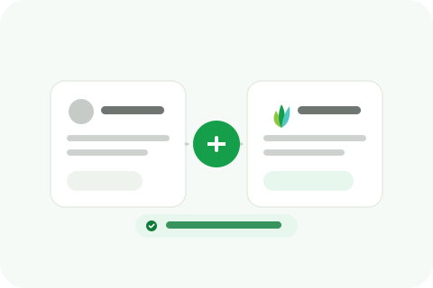

A reselling agency needs enough visibility into case progress to answer their own client's questions confidently, but a white-label partner who reports too often, or with too little structure, ends up generating noise instead of clarity. Getting the cadence right is less about frequency alone and more about matching the update to what the agency actually needs at that stage.

A reselling agency's own client relationship depends on the agency looking informed and in control, and that's only possible if the white-label partner behind the scenes feeds them updates on a schedule the agency can actually plan around. A partner who reports sporadically, bursts of updates followed by long silences, forces the agency to either chase information or go quiet with their own client at exactly the wrong moments.
A weekly summary works best when it's scannable rather than exhaustive, case ID, current stage, and a one-line status note, not a full narrative retelling of every email sent that week. Agencies managing several reselling clients at once need to skim a dozen case updates in a few minutes, and a bloated report that takes longer to read than the work itself took to do defeats its own purpose.
Reporting cadence isn't a separate promise from your SLA's effort-based commitments, it's the visible evidence that those commitments are being met. An agency that never sees a cadence matching what the SLA describes has no way to verify the partnership is performing as agreed, regardless of how well the underlying casework is actually going.
A newly onboarded agency generally wants more frequent, more detailed updates while they're still learning to trust the partnership, and that can reasonably taper to a lighter cadence once a track record is established and the agency has stopped needing constant reassurance. Flagging this shift explicitly, rather than quietly reducing communication and hoping it goes unnoticed, keeps the agency from mistaking a maturing relationship for a partner who's becoming less attentive.
Not every reselling agency wants the same reporting rhythm, some want brief daily pings, others find that excessive and prefer a single comprehensive weekly digest. Asking during onboarding what cadence and format the agency actually wants, rather than defaulting to a one-size-fits-all schedule, avoids the mismatch of over-communicating with agencies who find it noisy and under-communicating with ones who want more.
An agency caught flat-footed by their own end client, unable to answer "what's the status on this?" because the white-label partner went quiet for two weeks, doesn't just lose a moment of credibility, it starts questioning the partnership itself. Consistent cadence is one of the cheapest things a partner can control directly, and one of the most expensive to get wrong.
We give reselling agencies a consistent, scannable reporting rhythm they can actually plan their own client updates around.